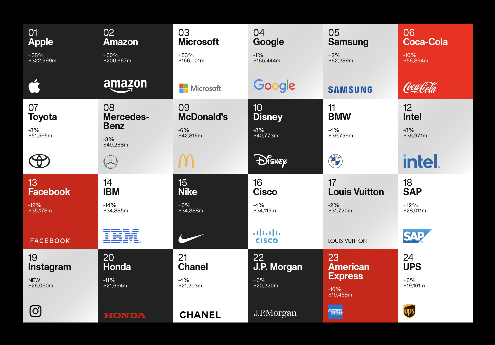
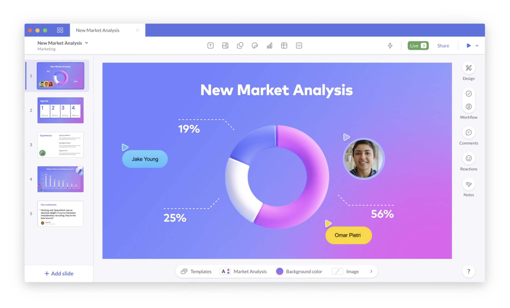
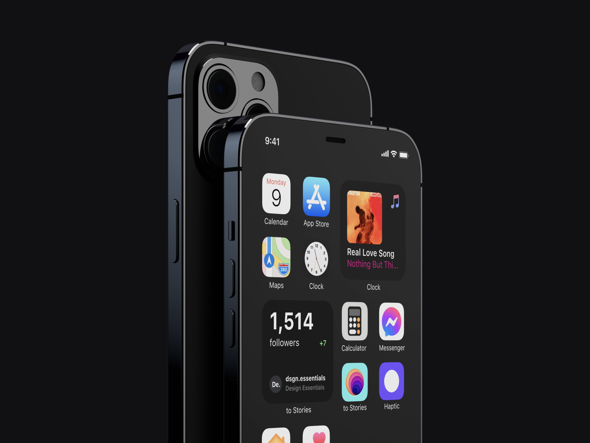
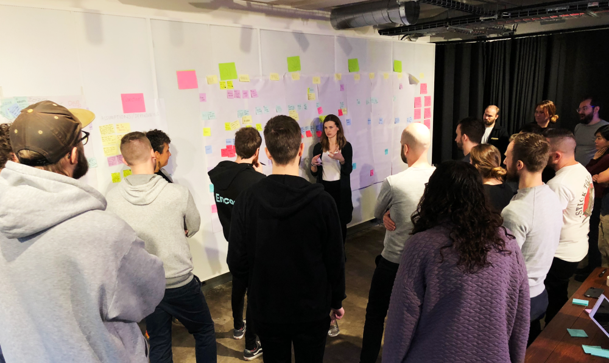
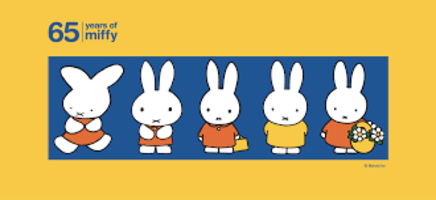
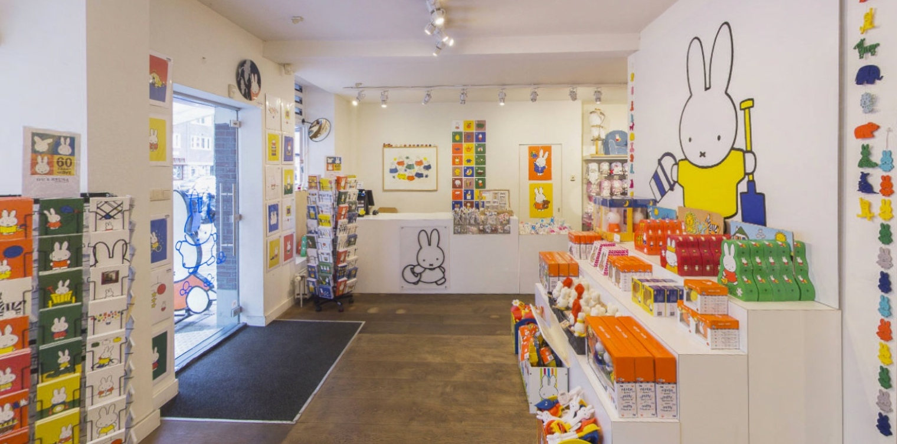

设计周刊 Design Weekly #34
Thu, Nov 19, 2020
🏷 设计新闻
2020 年全球最佳品牌排名报告
https://interbrand.com/best-global-brands/
由世界领先品牌咨询公司 Interbrand 出品的 2020 年全球最佳品牌榜，苹果稳居第一，完整品牌报告 PDF 这里下载

🏷 设计资源
伊朗的设计师们
https://www.iranianxdesign.com
一个不断增长的伊朗设计师目录。

线上 PPT 工具：Pitch
一款可线上协作的 PPT 设计工具，目前免费哦~

iPhone 12 Pro Free Mockup
https://dribbble.com/shots/14424577-iPhone-12-Pro-Free-Mockup
随着iPhone 新品的发布，又一波 Mockup 资源^_^

🏷 设计文章
Spotify：开始创建设计设计系统之前，需要知道的 5 件事
https://spotify.design/article/5-things-i-wish-id-known-before-starting-a-design-system-at-spotify
作者 Tyce Clee 2017 年加入 Spotify，是一名新项目经理，负责 Spotify 的设计系统 Encore，本文是他在设计系统搭建过程中总结的5 点经验，希望对你有所帮助。（设计系统对内部用户来说也是一个产品~）
- 尽早和用户交流互动；
- 充分沟通；
- 了解语义版本控制（SEMVER）；
- 跟踪使用情况；
- 建立反馈机制。

🏷 随便看看
米菲兔子和她的商业帝国
https://www.topys.cn/article/31156
米菲，一个拥有普世共情能力的强大IP。
你还记得她么？在晨光文具上的印花、吊坠上，那只著名的白色兔子。
今天一起来了解下这只从荷兰远渡重洋，拥有专属博物馆的“商业巨兔”米菲是怎样拥有如此强大的生命力的？

